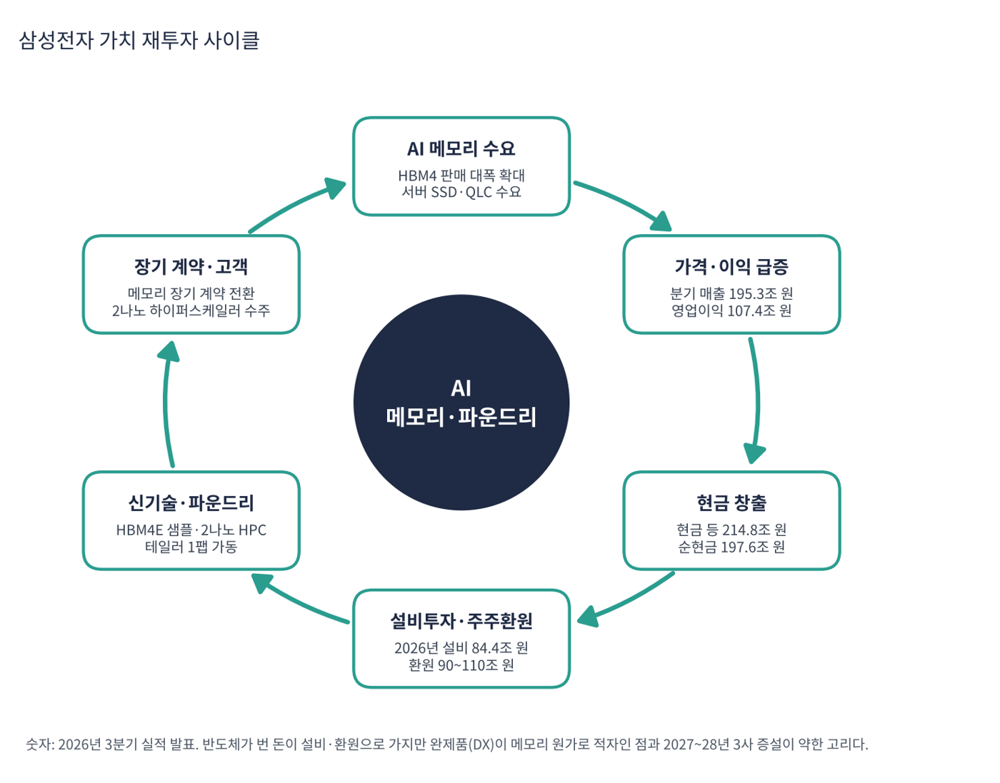

삼성전자는 메모리 반도체 세계 1위(D램·낸드), 파운드리 세계 2위, 스마트폰·TV·가전 세계 최상위권 회사다. 반도체를 담당하는 DS(Device Solutions)와 완제품을 담당하는 DX(Device eXperience), 자회사 삼성디스플레이(SDC)·하만으로 이뤄진다. 지금은 이익의 99%가 반도체에서 나온다.
| 항목 | 내용 |
|---|---|
| 종목 | 삼성전자 (005930) · KRX · 반도체·전자 · 1969년 설립 · 본사 경기도 수원 |
| 시가총액 | 약 1,390조 원 (트레이딩뷰 표시값, 11/6 종가 188,700원, 우선주 포함 여부에 따라 달라질 수 있음) |
| 최근 분기(26.3Q) | 매출 195.3조 원(+127%), 영업이익 107.4조 원(+783%, 이익률 55%), 순이익 75.1조 원, EPS 11,462원 |
| 재무 | 현금 등 214.8조 원, 순현금 197.6조 원(시총의 약 14%) |
| 주주환원·투자 | 3분기 배당 30조 원(주당 4,601원). 2026년 총 환원 90~110조 원, 시설투자 84.4조 원(DS 76.8조) |
| 다음 이벤트 | 2027년 1월 말 이사회 차기 주주환원 정책 발표, 4Q26 실적 |
| 구분 | 내용 |
|---|---|
| 경영진 | 이번 자료(분기 실적 발표문·IR)에는 경영진 개인의 발언이 없어 인물 정보는 확인하지 못했다. 회사의 공식 메시지로 경영 방향을 정리했다. |
| 주주환원 의사결정 | 이사회가 2027년 1월 말 차기 정책을 발표. 자사주 매입 시 우선주 비중 조정 검토(보통주·우선주 괴리를 회사가 인지) |
경영 스타일: '메모리·파운드리·패키징·완제품을 모두 가진 회사로서 한 번에 제안한다'. 2025년 상반기 'DS 영업이익 0.4조 원'의 위기를 지나 2025년 하반기 범용 D램 가격 급등과 2026년 2월 HBM4 세계 최초 양산 출하로 반전했다. 시설투자를 84.4조 원으로 늘리면서 환원도 90~110조 원으로 약속하는 구조다.
HBM4를 2026년 2월 세계 최초로 양산 출하했고 HBM4E는 업계 최초로 샘플을 냈다. HBM4의 맨 아래층 '베이스다이'를 자체 파운드리의 로직 공정으로 만들어 파운드리 실적도 끌어올린다. 2나노 HPC 수주와 미국 테일러 1팹 가동이 이어진다.
메모리(HBM) + 베이스다이(파운드리) + 패키징 + 커스텀 SoC를 묶어 하이퍼스케일러에 '칩 설계부터 HBM까지 한 번에' 제안할 수 있는 유일한 회사가 되려 한다.
| 분기 | 매출 | YoY | 영업이익 | 이익률 | DS 매출 | DS 영업이익 | DS 이익률 | DX 영업이익 |
|---|---|---|---|---|---|---|---|---|
| 2024.4Q | 75.8조 | +12% | 6.5조 | 8.6% | 30.1조 | 2.9조 | 9.6% | 2.3조 |
| 2025.1Q | 79.1조 | +10% | 6.7조 | 8.5% | 25.1조 | 1.1조 | 4.4% | 4.7조 |
| 2025.2Q | 74.6조 | +1% | 4.7조 | 6.3% | 27.9조 | 0.4조 | 1.4% | 3.1조 |
| 2025.3Q | 86.1조 | +9% | 12.2조 | 14.2% | 33.1조 | 7.0조 | 21.1% | 3.5조 |
| 2025.4Q | 93.8조 | +24% | 20.1조 | 21.4% | 44.0조 | 16.4조 | 37.3% | 1.3조 |
| 2026.1Q | 133.9조 | +69% | 57.2조 | 42.7% | 81.7조 | 53.7조 | 65.7% | 3.0조 |
| 2026.2Q | 171.5조 | +130% | 89.5조 | 52.2% | 127.5조 | 89.2조 | 70.0% | 0.8조 |
| 2026.3Q | 195.3조 | +127% | 107.4조 | 55.0% | 147.1조 | 106.5조 | 72.4% | -0.8조 |

흐름 요약: 2025년 상반기까지는 '삼성 위기론'의 시기였다. DS 영업이익이 1조 원 안팎(2025년 2분기 0.4조 원)으로 떨어지고 HBM에서 SK하이닉스에 밀렸다. 반전은 2025년 하반기 범용 D램 가격 급등이었고 규모가 가장 큰 삼성이 수혜를 가장 크게 받았다. 완제품은 메모리 호황의 피해자다. DX 영업이익은 2025년 1분기 4.7조 원에서 2026년 3분기 -0.8조 원으로 내려갔다(스마트폰 MX/NW -0.6조, TV·가전 -0.2조, 회사는 "메모리 가격 상승 등 비용 부담 확대"를 이유로 설명). 3분기에는 환율이 이익을 약 10조 원 깎았다(달러·유로 약세). 2024.4Q~2025.2Q의 DX 영업이익은 과거 발표 기준이며 조직 개편에 따른 재분류가 있었을 수 있다.
| 부문 | 돈을 버는 방식 | 3Q26 매출 | 영업이익 |
|---|---|---|---|
| 메모리 (DS) | D램(HBM·서버 DDR5·모바일 LPDDR), 낸드(서버 SSD·QLC). 데이터센터·스마트폰·PC 제조사에 판매 | 140.7조 원 | 106.5조 원 (DS 합계) |
| 시스템LSI·파운드리 (DS) | 엑시노스 SoC·이미지센서, 위탁생산(2나노·4나노, HBM 베이스다이) | 약 6.4조 원 (DS 매출 - 메모리 매출, 역산) | (DS 합계에 포함, 별도 미공개) |
| MX/NW (DX) | 갤럭시 스마트폰·태블릿·웨어러블, 통신 장비 | 37.7조 원 | -0.6조 원 |
| VD/DA (DX) | TV·모니터, 냉장고·세탁기 등 생활가전, 가전 구독 | 13.9조 원 | -0.2조 원 |
| SDC | 스마트폰·IT용 OLED 패널(애플 등) | 8.0조 원 | 1.1조 원 |
| 하만 | 차량용 전장, 오디오 | 4.3조 원 | 0.6조 원 |

삼성전자는 사실상 '메모리 회사'가 됐다. 1년 전 매출의 40%가 스마트폰·가전이었다. 메모리 매출은 1년 만에 26.7조 원에서 140.7조 원으로 5.3배가 됐고 출하량보다 가격이 훨씬 크게 올랐다. 4분기에는 "제한된 공급량 안에서 AI향 제품 중심으로 믹스를 운영"한다고 밝혔다. 파운드리는 HBM4 베이스다이 매출 성장으로 실적이 크게 개선됐다. 메모리 영업이익은 별도로 공개되지 않고(DS 합계만), HBM 매출 규모·출하량·가격 변화율도 발표문에 숫자로 나오지 않는다. 시스템LSI·파운드리 매출은 DS 매출에서 메모리 매출을 뺀 역산 근사치다.
삼성전자의 2026~2027년 메시지는 하나로 모인다. AI 인프라에 필요한 반도체를 한 회사 안에서 모두 공급하는 것이다.
| 축 | 회사의 계획 (3분기 실적 발표문) |
|---|---|
| 메모리 리더십 | "HBM4 판매 확대 및 HBM4E 양산, 고성능 DDR5 등 고부가가치 제품 중심 판매 기조를 강화해 리더십을 더욱 공고히" |
| 파운드리 | 미국 테일러 팹과 2나노 AI/HPC 양산 본격화, 대형 하이퍼스케일러를 포함한 2나노 HPC 고객 중심 수주 |
| 시스템LSI | 커스텀 SoC 신규 고객 확보, 센서는 모바일 밖으로 응용처 확대 |
| 완제품 | 플래그십 중심 믹스 개선, 폼팩터 혁신(폴드8), 플랫폼·구독으로 원가 부담 흡수 |


위: 트레이딩뷰 주봉 데이터로 재구성(10·20·40주선). 아래: 트레이딩뷰 공개 차트 일봉 캡처(작도 숨김, 이동평균선·볼린저밴드만 표시).
| 이동평균 | 값 | 종가 대비 | 해석 |
|---|---|---|---|
| 5일선 | 211,340 | -10.7% | 급락 후 하락 중 |
| 20일선 | 220,685 | -14.5% | 5일선과 함께 하락 |
| 50일선 | 246,714 | -23.5% | 9~10월 박스 하단 |
| 100일선 | 263,917 | -28.5% | 6월 고점 영향으로 가장 높음 |
| 200일선 | 239,124 | -21.1% | 10월 이탈 |
6월 고점(374,500원) 이후 반 토막(-50%)이 나 200일선 아래로 내려왔다. 11/6 장중 179,200원으로 55일 최저가를 기록했다.
| 규칙 | 기준 | 현재 값 | 신호 |
|---|---|---|---|
| 장기 추세 필터 | 종가 vs 200일선 | 188,700 < 239,124 | 매도 |
| 중장기 교차 | 50일선 vs 200일선 | 246,714 > 239,124 | 매수 |
| 단기 교차 | 20일선 vs 50일선 | 220,685 < 246,714 | 매도 |
| 돈키언 채널 | 55일 고가 288,000 / 저가 179,200 | 중간값 233,600 아래 | 매도 |
| 1개월 모멘텀 | 21거래일 수익률 | -29.7% (기준 268,500) | 매도 |
| 3개월 모멘텀 | 63거래일 수익률 | -21.4% (기준 240,000) | 매도 |
| 6개월 모멘텀 | 126거래일 수익률 | -14.4% (기준 220,500) | 매도 |
| 12개월 모멘텀 | 252거래일 수익률 | +85.0% (기준 102,000) | 매수 |
| 종합 (8개 평균) | -0.50 | 매도 우위 |
해석: SK하이닉스와 같은 구조다. 단기·중기 신호는 매도이고 12개월 모멘텀과 50/200일 교차만 매수로 남았다. 14일 ATR 15,518 (8.2%).
| 구분 | 가격대 | 근거 |
|---|---|---|
| 저항 | 201,000 ~ 247,000원 | 20·50일선, 6개월 기준선(220,500원) 부근, 200일선(239,000원) |
| 지지 1 | 179,000원 | 7월·11월 저점 |
| 지지 2 | 167,000 ~ 172,000원 | 3월 저점대 |
| 지지 3 | 154,000원 | 피보나치 78.6% |
숫자는 역대 최고인데 주가는 '정점 논쟁'에 갇혀 있다. 이 논쟁이 풀리기 전까지 반등은 201,000~247,000원 저항대에서 막힐 가능성이 크다. 179,000~189,000원에서 계획 비중의 30%, 170,000원 부근에서 20%를 진입하고(평균 180,000원·손절 160,000원 기준 손익비 1:2~1:3), 220,500원 회복 시 20%, 239,000원 회복 시 30%를 추가한다. 1차 220,000원에서 40%, 2차 239,000~247,000원에서 40% 익절하고 나머지는 박스 상단 285,000원 재도전 여부로 판단한다. 179,000원 종가 이탈 시 비중을 줄이고 160,000원에서 손절한다.
| 악재 요인 | 내용 | 강도 |
|---|---|---|
| 메모리 사이클 정점 | 2027~2028년 3사 신규 팹(삼성 평택·SK 용인·마이크론 아이다호/뉴욕) 동시 가동 시 공급 급증 가능 | 높음 |
| HBM 경쟁 | SK하이닉스 HBM4 4분기 주력 전환·장기 계약 확보, 마이크론 추격 | 중간 |
| 완제품 수익성 | 메모리 원가 상승 → DX 적자 지속 위험(3분기 -0.8조 원) | 중간 |
| 환율 | 원화 강세 시 부품 사업 이익 감소(3분기 약 -10조 원) | 중간 |
| 파운드리 | TSMC와의 격차, 2나노 수율·고객 확보 | 중간 |
| 보통주·우선주 괴리 | 회사가 시장 관심을 인지, 자사주 매입 시 우선주 비중 조정 검토 | 참고 |
| 티커 | 회사 | 시가총액 | PER | PEG | P/S | EPS 성장(YoY) |
|---|---|---|---|---|---|---|
| 005930 | 삼성전자 | 약 1,390조 원 | 약 4.1배 (3분기 EPS 연율화) | 0.01 (의미 제한) | 2.3배 | 순이익 TTM 미확인 |
| 000660 | SK하이닉스 | 약 1,018조 원 | 약 5.4배 (TTM 순이익) | 0.01 (의미 제한) | 3.8배 | 영업외 손익 영향 큼 |
| MU | 마이크론 | $781B | 9.3배 | 0.01 | 5.59배 | +879% |
| SNDK | 샌디스크 | $119B | 6.7배 | – | 4.18배 | – |
| WDC | 웨스턴디지털 | $99B | 10.2배 | 0.04 | 6.36배 | +275% |
| TSM | TSMC | $1,630B | 24.2배 | 0.39 | 12.03배 | +59% |
| NVDA | 엔비디아 | $4,498B | 23.6배 | 0.20 | 15.63배 | +125% |
트레이딩뷰는 한국 종목 재무 데이터를 제공하지 않아 삼성전자·SK하이닉스 값은 발표 실적으로 직접 계산했다. 삼성전자의 순이익 TTM은 이번 자료로 확인하지 못해 3분기 EPS 연율화를 썼다.
비교 결론: 삼성전자 PER 약 4.1배는 SK하이닉스(5.4배)·마이크론(9.3배)보다도 낮다. 메모리 3사가 모두 PER 한 자릿수에 있다는 것은 시장이 같은 질문(이 이익이 오래가는가)을 던지고 있다는 신호다. 삼성은 완제품·파운드리라는 완충장치가 있어 이익 감소 폭은 상대적으로 작을 수 있으나 그만큼 메모리 레버리지도 작다.
삼성전자는 적자 기업이 아니다. 현금 등 214.8조 원, 순현금 197.6조 원이다. 이번 자료에는 영업현금흐름·FCF 수치가 없어 시설투자와 주주환원이 영업이익 대비 얼마인지로 점검했다.
| 지표 | 값 | 출처·계산 | 해석 |
|---|---|---|---|
| 현금 등 / 순현금 | 214.8조 / 197.6조 원 | 3분기 말 (전 분기 190.0조 / 167.6조) | 분기 만에 순현금 +30조 원 |
| 2026년 시설투자 | 84.4조 원 | DS 76.8조 + 디스플레이 3.9조 | 1~3분기 영업이익 254.1조 원의 약 1/3 |
| 3분기 유형자산 취득 | 26.9조 원 | 전 분기 14.1조, 전년 동기 10.8조 | 한 분기 만에 거의 2배 |
| 2026년 주주환원 | 90~110조 원 | 3분기 배당 30조 원, 잔여 55~75조 원 | 순현금의 약 50% 수준 |
| TTM 영업이익 | 274.2조 원 | 2025.4Q~2026.3Q 합계 | 순현금의 약 1.4배 |
| 가정 | 연간 영업이익 | 시설투자 + 환원(약 185조 원)과 비교 |
|---|---|---|
| 3분기 영업이익 연율화 | 약 430조 원 | 충분히 감당 |
| 영업이익 50% 감소 (가정) | 약 215조 원 | 시설투자·환원을 영업이익으로 감당 가능(세금 전) |
| 영업이익 70% 감소 (가정) | 약 129조 원 | 환원을 유지하려면 순현금 사용 필요 |
시설투자 84.4조 원 + 환원 약 100조 원(중간값)을 합친 약 185조 원과 단순 비교한 내 점검 가정이다. 세금·이자는 반영하지 않았다.
| 기준 | 매출 | P/S | 비고 |
|---|---|---|---|
| 최근 4분기(TTM) | 594.5조 원 | 2.3배 | 시총 1,390조 ÷ 594.5조 |
| 3분기 연율화 | 781.2조 원 | 1.8배 | 195.3조 × 4 (가정) |
| 동종 반도체 | – | – | SK하이닉스 3.8배, 마이크론 5.6배, TSMC 12.0배, 엔비디아 14.8배 |
해석: P/S 2.3배는 비교 종목 중 가장 낮다. 매출의 상당 부분이 영업이익률 낮은 완제품이라 영업이익률(55%)이 SK하이닉스(80%)보다 낮고, 시장이 메모리 이익을 정점으로 보기 때문이다.
| 지표 | 값 | 판정 |
|---|---|---|
| 영업이익 (3분기) | 107.4조 원 | 사상 최대 |
| TTM 영업이익 | 274.2조 원 | 2025.4Q~2026.3Q 합계 |
| EBITDA | – | 이번 자료에 감가상각비가 없어 확인하지 못함 |
| 기업가치(시총 - 순현금) | 약 1,192조 원 | 1,390조 - 197.6조 |
| EV / 영업이익 (3분기 연율화) | 약 2.8배 | 1,192조 ÷ (107.4조 × 4) |
EBITDA는 이번 자료에서 확인하지 못했다. 대신 영업이익 기준 EV 배수가 약 2.8배로 SK하이닉스(EV/EBITDA 약 2.6배)와 비슷한 수준이다.
| 방식 | PER | 이익 성장률 | PEG | 판정 |
|---|---|---|---|---|
| 3분기 EPS 연율화 (11,462원 × 4) | 약 4.1배 | 3분기 EPS +536% (1,802원 → 11,462원) | 약 0.01 | 적극 매수 |
| 영업이익 기준 (세율 24% 가정, 추정) | 약 6.7배 (1,390조 ÷ 208조) | +811% (영업이익 TTM 30.1조 → 274.2조) | 약 0.01 | 적극 매수 |
| 이익이 정점에서 반 토막(가정) | 약 13배 | – | – | 시나리오 |
| 이익이 3분의 1로(가정) | 약 20배 | – | – | 시나리오 |
판정: PEG는 형식상 '적극 매수'(0.5 이하)지만 쓸모가 없다. 영업이익이 1년 새 9배가 된 기저 효과로 성장률이 너무 커서 PEG가 0.01 수준이다. 의미 있는 것은 이익이 정점에서 줄면 PER이 얼마가 되는가다. 이익이 반으로 줄면 PER 약 13배, 3분의 1로 줄면 약 20배다. PER 4~7배는 시장이 이 이익이 지속되지 않는다고 본다는 뜻이다. 영업이익 기준 PER과 PEG는 내가 24% 세율을 가정해 계산한 추정이며, 순이익 TTM은 이번 자료로 확인하지 못했다.

삼성전자 사이클의 엔진은 AI 서버 전반의 메모리 수요와 가격 상승이다. 번 돈은 시설투자와 주주환원으로 나간다. 다른 반도체 회사와 달리 완제품 사업이 원가 부담을 안아 이익 일부가 회사 안에서 상쇄되는 구조다.
| 고리 | 현재 숫자 | 고리 강도 | 약해지는 신호 |
|---|---|---|---|
| ① AI 메모리 수요 | HBM4 판매 대폭 확대, 서버 SSD·QLC 수요 급증 | 강함 | 서버 투자 둔화, 고객 재고 증가 |
| ② 가격·이익 | 매출 195.3조 원(+127%), 영업이익 107.4조 원(55%) | 강함 | 4분기 가격 상승 폭 둔화 |
| ③ 현금 창출 | 현금 등 214.8조 원, 순현금 197.6조 원 | 강함 | 시설투자·환원 증가 |
| ④ 설비투자·환원 | 2026년 설비 84.4조 원, 환원 90~110조 원 | 확대 | 2027~28년 3사 신규 팹 동시 가동 |
| ⑤ 신기술·파운드리 | HBM4E 샘플, 2나노 HPC 수주, 테일러 1팹 | 진행 중 | TSMC와의 격차, 2나노 수율 |
| ⑥ 장기 계약·고객 | 장기 계약 전환, 2나노 하이퍼스케일러 수주 | 전환 중 | SK하이닉스 대비 HBM 점유율 |
구조: ①~③이 강하고 시장이 의심하는 곳은 ④다. 회사는 "2027년 공급 부족이 올해보다 심화"를 말하고, 시장은 신규 팹 가동 후 가격 하락을 걱정한다. 이 논쟁은 2027년 상반기 메모리 가격이 결론을 낼 것이다.